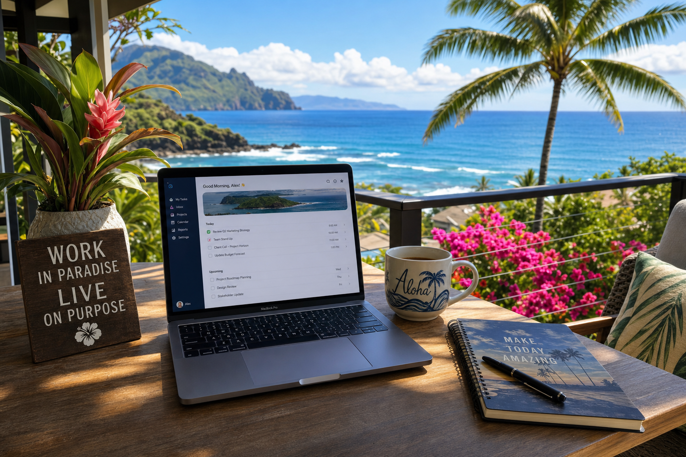

The pandemic normalized remote work, and Hawaii has become one of the most sought-after locations for remote workers. Whether you're working for a mainland company from your Honolulu apartment or running your own business from the North Shore, here's how to set up a remote work environment that actually works.
Start with Reliable Internet
Everything else in your remote work setup is secondary to internet reliability. In Hawaii, this means choosing the right provider and having a backup. We recommend fiber internet from Hawaiian Telcom if available at your address — the symmetric upload and download speeds are crucial for video calls. Have a mobile hotspot as a backup for outages, which are more common in Hawaii than on the mainland.
Your Network Setup Matters
If you're serious about remote work, invest in a quality router. The Wi-Fi router provided by your ISP is typically underpowered. A $200–$400 mesh Wi-Fi system (like Eero Pro or Google Nest) will give you reliable coverage throughout your home and better performance than the ISP hardware. We install and configure these regularly for remote workers.
VPN: When You Need One
If your employer requires a VPN to access company resources, make sure you're connecting to mainland servers with a good connection — VPN adds latency, and you're already starting from Hawaii. For personal privacy on public Wi-Fi (coffee shops, co-working spaces), a commercial VPN service is worthwhile.
Ergonomics for Long Sessions
This is often overlooked in tech discussions: your physical setup matters enormously. A proper monitor at eye level, an external keyboard and mouse, and a good chair make multi-hour work sessions sustainable. Given Hawaii's beautiful outdoor spaces, many remote workers also benefit from a laptop stand that enables working from lanais and outdoor tables.
Time Zone Management
Hawaii Standard Time (HST) is UTC-10, making it 5 or 6 hours behind the East Coast depending on daylight saving time. For those working with mainland clients, early morning meetings are common. We recommend scheduling focused work time in the afternoon when mainland colleagues are done for the day — it's your most productive time.